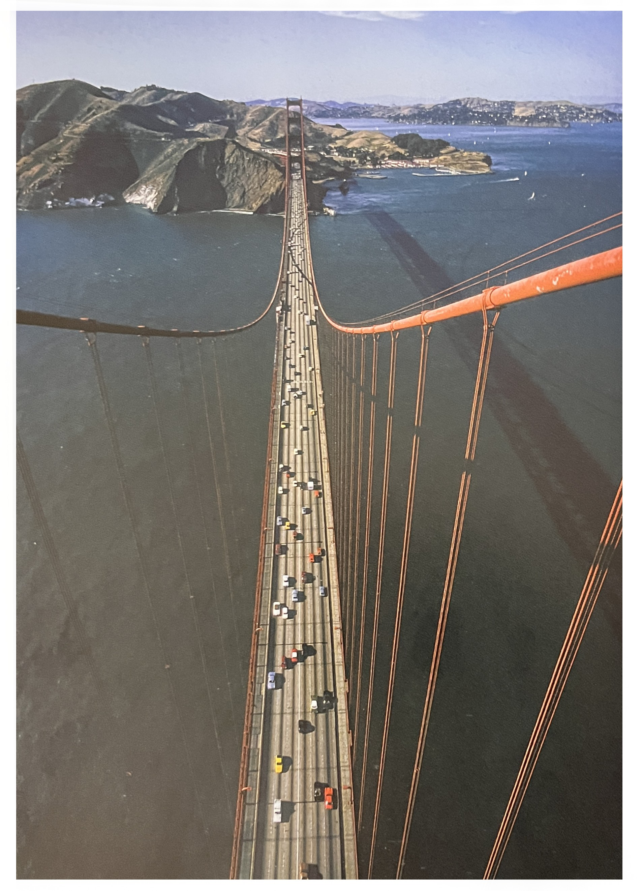
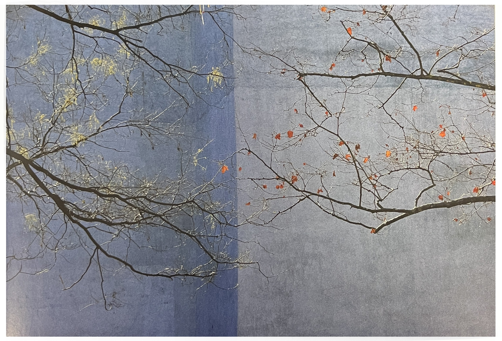

금문교의 제스쳐는 광각렌즈를 사용함으로써 그 드라마적 요소가 부각되고 길게 늘어진 케이블의 모습이 강조되었다. 이럴 때 1000mm 렌즈는 그다지 좋은 선택이 아닐 것이다.
세상에는 정답이 하나만 존재하는 것은 아니다. 그러니 부각시키고자 하는 요소에 맞는 적재적소의 장비를 고를 수 있어야 한다. 문제는 반드시 해결책을 제시하기 마련이다.
금문교
끝없이 찍을 것[1]이 사진과 같은 장소와 구도의 사진을 2, 3년 동안 찍어왔다. 매번 똑같은 장면을 찍기 위해서 나는 누군가의 현관 앞 계단에 올러서야만 했다. 나는 늘 문이 열리거나 누군가 나를 밀어버려서 바닥으로 떨어지지 않을까 하는 두려움을 가지고 있었다. 그렇지만 이 사진 속의 계절에 따라, 하루 중 어느 때인지에 따라, 날씨에 따라 혹은 무언가를 더하거나 빼는 것에 따라 변하는 보습을 보면서 세월이 축적되면 그 가치가 더 커질 것이라 여겨졌다.
각각의 사진은 구조적으로 서로 동일하다. 그러나 각기 서로 다른 자기만의 제스처와 디테일을 지닌다. 이 사진의 가운데 위쪽에는 누가 묶어 놓은 것인지 아니면 나무에 우연히 걸린거던지 모를 풍선 끈이 보인다. 그리고 사진의 왼쪽에서는 새싹이 움트는 봄의 모습을 볼 수 있고, 오른쪽에서는 가을의 마지막 붉은 단풍을 볼 수 있다.
스프링가의 공원
[참고문헌]
[1]빛, 제스처, 그리고 색light, gesture & color, 제이 마이젤 지음, 박윤혜 옮김, 시그마북스, 2015.3.2
....
....
....
....
....